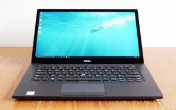

What to Look for When Buying a Business Laptop?
A business laptop is a computer specially constructed to tolerate heavier workload and prolonged usage, making it particularly ideal for business work.They are built stronger, lighter, and are more efficient for rougher times and hectic situations.Some of them are also more secure and tougher than regular laptops for personal usage because a business laptop has more confidential files and cannot be afforded to be broken easily.
What are the best business laptops?
Even though the best computer for you depends on your individual needs, budget, and the field of work you belong to, here are some of the overall best business laptops on the market in 2020.Ranging from expensive to more budget-friendly options, you can pick and choose your favourite.
1- HP Spectre x 360
With a CPU of 10th generation Intel Core i5-i7 and Intel Iris Plus Graphics, this laptop is supposedly the best overall.It has a RAM of 8 to 16 GB and a screen 13.3'.To top it all off, it has excellent storage of 256 GB to 2 TB SSD.
Pros: It is stylish and has a great overall performance.
Cons: The battery life can cause inconvenience in the long term and it tends to get hot if used for too long at a time.It can also get a little pricey for beginners.
2- Dell XPS 13
Again, with a CPU of 10th generation Intel Core i5-i7 and brilliant Intel Iris Plus graphics, this laptop is a hit in the market.It has a RAM of 8 to 16 GB and a storage capacity of 256GB to 2 TB SSD.The 13.3-inch FHD screen makes it suitable for professional workers as well as beginners.
Pros: It has a beautiful design and exterior, as well as an excellent battery life.
Cons: The audio is not the most flattering sometimes and can be very dull.It can punch quite a hole in the pocket.
3- Dell XPS 15 Just like XPS 13, this one is also well-loved and very suitable for the workaholics.It is a two-in-one laptop that can tolerate heavy workload.With a CPU of 9th generation Intel Core i7-9750 processor and a RAM of 16 GB, it is quite a competitor of the most eligible computers in the business market right now.It has a storage capacity of 1 TB SSD and has a great screen size and resolution.
Pros: It has excellent features and specifications as well as a beautiful screen.The added good battery life is a cherry on top.
Cons: It can get a little expensive for people with a low budget.
4- Dell Latitude 7480
Another Dell laptop on the list, it is safe to say that the brand has earned a good name in the business industry.Just like the other Dell laptops, this one maintains a reputation with good quality and user-friendly design.It has a CPU of 7th generation Intel Core and the facility of wireless Wi-Fi.Not just this, it has a touch screen with a fingerprint activation system for an added factor of security.In short, it is ideal for modern businessmen and women.It has a 14-inch display and a 4 GB RAM.
Pros: It has a decent design and is easier to use.Plus, it is more secure with fingerprint accessing the feature.
Cons: It can be a little on the expensive side, and its speakers are quite soft for some users.
5- Huawei MateBook 13
Also known as the best value laptop with a processor of 8th generation Intel Core i5-i7 and excellent graphics (Intel UHD graphics 620), this one is one of the top ones on the list.It has a good RAM of 8 GB and equally excellent storage of 256 GB to 512 GB SSD.If you are looking for a laptop for video editing or creating art and design, this may be your laptop to go.
Pros: It has excellent overall performance and excellent graphics.It also has a gorgeous, lightweight design, making it of good value overall because it costs less than its other competitor computers.
Cons: The 8GB storage can be limiting if you have a heavy workload very often.
6- Lenovo ThinkPad XI Carbon
One of the best options in the market for all the business people, this one has a 7th generation Intel Core i5-i7 CPU and a 14-inch display (12.7 x 8.5 x 0.6 inches) of 1080 or 4K quality.It weighs about 2.5 pounds, with a 16 GB RAM and has a storage capacity of 256 to 1 TB SSD.
Pros: It is lightweight and has a gorgeous exterior with a good quality keyboard.Its long battery life is an added desirable feature.
Cons: It does not have a slot for a microSD card.The model with 4K screen quality does not have a good battery life.
7- Acer Swift 3
For all the people looking for a budget-friendly computer, this is the answer to your prayers.With a CPU of Intel Core i7 and excellent Nvidia GeForce MX150 graphics, this laptop is a wonder on its own.A screen of 14 inches and full HD display, it is well-loved for both business and recreational purposes.It has a storage capacity of 128GB to 1 TB HDD and a great 8GB RAM.
Pros: It is very reasonably priced despite all of the excellent features and high quality.It has a perfect keyboard and a touchpad.
Cons: The exterior looks a little plain and minimal.
8- MacBook Pro
This one is the best for all the Apple lovers.A 16-inch screen with a 9th generation Intel Core i7-i9 and AMD Radeon Pro 5300M graphics, this laptop is your go-to for a startup business.It has an excellent 64GB RAM and a storage capacity of 512-8 TB SSD.
Pros: It has a stunning display and an improved keyboard.
Cons: It is quite expensive for a startup, beginner’s laptop.
How to choose the best business laptop?
When looking for the perfect laptop for your business and work dealings, there are a couple of particular specifications and features to keep a lookout for.The priority of these features depends on your individual needs and preferences.
Processor:
In the developing world of technology, the laptops are getting smaller, and their 'brains' are getting bigger.What this means is that the latest processors (the brains of the computers) are faster, affordable, and efficient.Pay close attention to the processor of the laptop you want to purchase for business needs.There are multiple options to choose from: multiple cores, power-saving processors, different costs, and whatnot!Get the one that suits your requirements.The best processors for business laptops are Intel Core i7 or Core i9, as these offer good performance and reasonable pricing.
Memory:
The memory of your laptop decides how many tasks you can do at once and how fast you can complete each of them.So, if your work involves a lot of multi-tasking, make sure you put the memory, or RAM, of your laptop on top of your priority list.We suggest you do not go any further below a 4GB RAM.The best memory for a business laptop is 8 GB to 16 GB.
Storage:
The third most important feature to look for no matter what field of work you belong to is the capacity of your laptop to save and store data.Even though it does depend on your individual needs, as a general rule, the higher, the better.(Just a warning, do not confuse storage with the RAM of a computer).
Graphics:
This is a priority for all the creative businessmen and artists.The better the graphics and display quality, the more precision and detail you can put into your work.It takes your work game up a notch and is thus an important feature to look for when choosing a laptop.If you are looking for a laptop for video editing or graphic designing, make sure you keep your eyes open for this particular feature.
Wireless facilities:
If you are a traveling business person who lacks the luxury of an indoor setting most of the time, built-in wireless services can do you good.These days, Wi-Fi systems are essential, and if they are for you too, and you hate the trouble of tagging along with a separate Wi-Fi device all the time, make sure you purchase a laptop that already has one.The people, who make money online, often require such a feature, so if you are a freelancer or you just travel a lot through the day, make sure you get a laptop with a wireless facility.
Battery life:
Last but not least, is the battery timing of the laptop.If you are someone who is always on the go and requires more time on the laptop without a charger, a good battery life should be your top priority when you choose a business laptop for yourself.As a general rule, the more the 'cells', the more the battery timing, however, how fast the battery drops depends on the individual laptop.Computers with higher screen quality and Wireless facilities tend to use up battery faster.
How much do business laptops cost?
Good business laptops can cost you from a minimum of $350 to anywhere up to $355,000, which majorly depends on the brand and quality of the laptop you want.
Generally, the rule is: the fancier the brand, the higher the price.However, very often, these high prices are justified by the features of the laptop, for example, good exterior, lightweight, fast RAM, good storage, and a heavy-load processor can take the price of the laptop higher.But if you are ready to compromise on some of these features, the price reduces, and the choices get more budget-friendly.
[bsa_pro_ad_space id=4]
Share on Facebook Tweet Follow us
Introduction: With such a huge percentage of customers, it becomes your responsibility to manage your customer support channel – using the right tools and in the most efficient manner.Contact center software is a huge step in this direction.
Contact center as a service is available for businesses of all sizes.It has now become an integral tool for businesses looking to communicate effectively with their customers and thereby build a loyal customer base.
Having said that, we understand that knowing – cloud contact center software is an invaluable resource – isn’t enough.The real deal lies in choosing the right one for your business.And that’s exactly why we are here today.
Here are 2020’s top 5 cloud contact center providers (in no particular order):
1.RingCentral:
Best for small to large businesses, RingCentral makes it to the list of top providers of contact center as a service.It holds the ability to enhance your customer engagement and boost your employees’ productivity.It offers inbound as well as outbound routing and comes power-packed with 40+ features for routing, customer engagement, workforce management, administration, business flexibility, scalability, and security.
Pros: -This cloud-based contact center offers intelligent routing options such as Advanced Call Distribution, IVR, Skills-based, Virtual Hold, Voicemail, Social Media, Chats, and more.-Features such as Whisper Coaching, Silent Monitoring, Barge-in help you provide better customer satisfaction.-Integration with CRM solutions such as Salesforce, Zendesk, Microsoft Dynamics, and Oracle Sales Cloud is available.-The Screen Recording options aid managers to provide relevant feedback to the agents on how to navigate the system.
Cons: -RingCentral offers access to recorded calls only for the past 3 months.-High pricing compared to the services they offer.
2.CallHippo:
CallHippo caters to all small and big contact center software requirements.It allows you to get rid of all geographical restrictions and offers inbound and outbound calls with an array of features.There are no upfront investments and you only pay for the features you use.
Pros: -CallHippo provides a unique feature – Global Connect.With this, you’ll always know the right time to call your clients.Finding out the time zone of their country will only be a matter of seconds.-You can select your local and toll-free number from 50+ countries.-Using the voice mail feature, your callers can instantly drop you a message when they cannot reach you over a call.This ensures their query is attended to at all costs.-You get detailed insights into customer history and other relevant data which in turn enhances the customer’s overall experience.-CallHippo’s dedicated customer support will be there for you throughout.
Cons: -If you need advanced reporting abilities, CallHippo might not work for you.-Features like IVRS are not present.-The dashboard could have been a little easier to use.
3.Avaya:
Best for small and medium businesses, Avaya is a California-based company that provides an international solution for your business communication needs.It offers on-premise, public, and hybrid cloud solutions.Most of Avaya’s clients are from the healthcare, education, and insurance domain.
Pros: -Avaya leverages AI to match their customer with the most suitable agent.-Offers automated solutions for inbound and outbound speech, video, email, and chat applications.-It allows your team to handle all customer channels through a single platform.-It identifies mobile callers and offers them an experience that is uniquely created for their device.-Avaya is also equipped with features like DTMF auto attendant and call recording for your agents.-The best part about Avaya is that you can personalize the services as per your team’s requirements and customers’ needs.-It offers a range of real-time and historical data that will help you improve your team’s performance.
Cons: -The prices are significantly high as compared to other solutions in the market.-The ring of a line on hold and a regular incoming call are the same.-There’s an unresolved issue wherein calls disconnect while transferring.
4.Five9:
Best for small to large businesses, Five9 has become a leading expert in offering call center software services.It is creating unbeatable customer experience since 2001.It leverages AI to serve businesses with personalized customer experience.And is known for its ability to provide 100+ types of reports.
Pros: -Five9 offers the Predictive Dialer feature which connects agents to people who are ready to talk.So the agents won’t have to listen to unanswered calls or busy signals.Apart from that, it also offers Progressive and Power dialers.-Its Call Center Metrics is another powerful feature that will enable you to monitor the performance of your business.-The pre-built CRM integrations like Salesforce, Oracle, Microsoft, Zendesk, NetSuite, and Velocify, will add to the customer satisfaction quotient.-It is built to quickly adapt to your expanding business needs.-Five9 relies on data collection and analytics to drive results.
Cons: -Remote monitoring isn’t possible.You have to do it with clients.-The UI for the agent app must have been more user-friendly.-History tracking for the messaging system is not available.
5.Freshcaller:
It is last but not the least in the list of cloud contact center providers.Best for small to medium-sized businesses, Freshcaller is meant to thoroughly support your customer requirements.It offers a cloud-hosted platform so you do not need to invest in any hardware.Freshcaller offers virtual phone numbers, local, international, toll-free, and vanity numbers for over 40 countries.
Pros: -Multi-level IVR is rightfully the first in the list of pros.It allows you to route your customer calls to specific agents.-Holiday Calendar feature allows you to take up incoming calls during holidays.You can then choose to direct your callers to available agents.-Warm Transfer wherein you can transfer the call to a new agent while giving enough context of the issue.-The efficient customer service team is a great plus.-You can also leverage customize hold, queue, or wait time music to showcase your new services/products and offers.
Cons: -Setting up the IVR and Voicemail system is complicated.-Issues of call drops and crashes have been seen.-Exporting data between multiple systems will require more integration.
Conclusion: Identify your business needs.Thoroughly study what the aforementioned top cloud contact center software has to offer.And zero-in on the one that fits the bill perfectly.
[bsa_pro_ad_space id=4]
Posted On: 2020-07-12T00:00:00
Posted By: Sunil Kumar



Content Date: 2020-07-12
Download Date: 2021-07-09
Document ID: L0C04DSU3